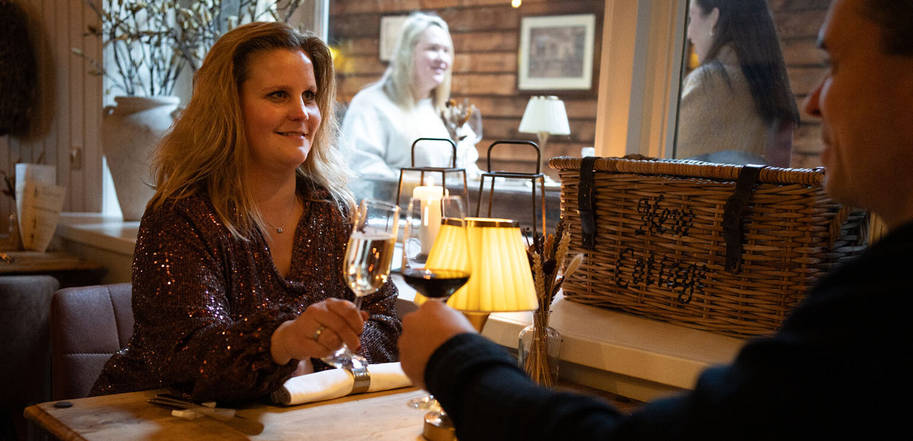
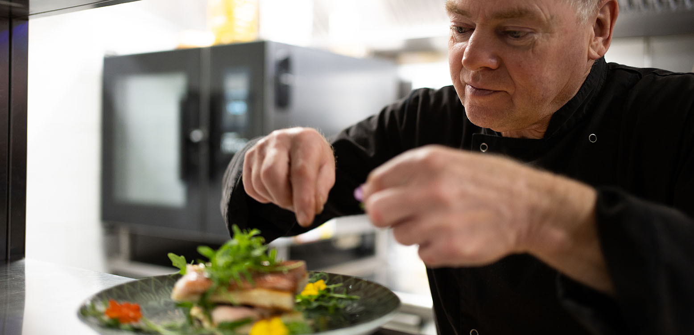
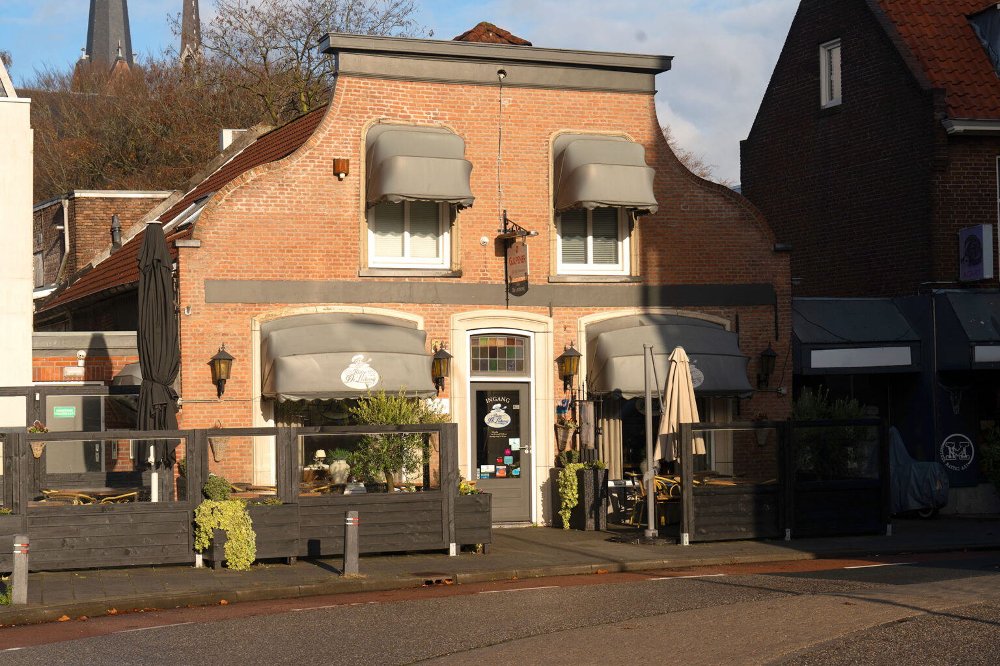

Klassiek-Franse bistro in Kaatsheuvel
Bistro De Leckernij
waar samenkomen vanzelf gaat
Een stukje Frankrijk op je bord
Bij Bistro De Leckernij kun je terecht voor heerlijk comfort food, in de charme van Franse sferen. Onze klassiek-Franse bistro serveert dagelijks de lekkerste verse gerechten.
Op de kaart vind je Franse klassiekers zoals wijngaardslakken en de Franse uiensoep met stokbrood en gegratineerde kaas. Maar ook voor internationale favorieten zoals steaks, schnitzel, een visproeverij met verschillende vissoorten en vegetarische gerechten kun je bij ons terecht.
Schuif aan voor een doordeweekse hap of een uitgebreid diner met vrienden en familie. Perfect voor gezinnen met kinderen, grote groepen, etentjes met vrienden en ook voor een zakelijke borrel of diner.
- 7 dagenper week geopend
- Sinds 1998Franse bistrokeuken in Kaatsheuvel
- 4,5 sterrenuit 651 Google reviews
- 3 minutenrijden van de Efteling

Uit eten met een groep
Mijlpalen en feestdagen vieren, proosten op kroonjaren of jubilea, toasten op successen: wat je reden ook is, bij Bistro De Leckernij zorgen we dat jouw gezelschap helemaal in de watten wordt gelegd.
- Tot 20 personen bestel je à la carte
- Vanaf 20 personen een samengesteld groepsmenu
- Ruimte voor groepen tot maximaal 30 personen
- Dieetwensen? Dan zorgen wij voor een aangepast menu
Zakelijk dineren
Voor een zakelijk diner tot en met acht personen hebben we eigenlijk altijd wel plek; reserveer wel vooraf. Bedrijfsuitje of besloten feest? Een besloten evenement met diner en aansluitend een borrel behoort ook tot de mogelijkheden. Neem vrijblijvend contact op, dan denken we graag met je mee.
Ook verjaardagen, jubilea en babyshowers vieren we graag met je.
Groepen groter dan 25 personen reserveren telefonisch.
Hapjes voor thuis
Thuis of op locatie een feestje of visite? Laat ons de hapjes verzorgen en eventueel bezorgen. De hapjes worden netjes op een schaal verzorgd om rond te laten gaan: stukjes luxe stokbrood met onder andere carpaccio, zalm, filet americain, paling, Hollandse garnalen en tonijnsalade.
€ 1 per hapje
- Afname
- Minimaal 30 stuks, daarna 60, 90, 120 enzovoort. De schaal komt altijd met één vast gesorteerd luxe assortiment.
- Bestellen
- Iedere dag mogelijk, minimaal een dag van tevoren. Telefonisch (0416 543 524), per mail of loop even binnen. Annuleren is niet mogelijk.
- Bezorgen
- € 5 bezorgkosten, we bezorgen tussen 14.00 en 17.00 uur.
- Betalen
- Via een betalingsverzoek, pinnen of contant in de bistro, of contant bij de bezorger (graag gepast).

Thuis in de klassiek-Franse keuken sinds 1998
Chefkok Adri van Wanrooij en mede-eigenaresse en gastvrouw Celine Lagarde zijn samen het kloppende hart van Bistro De Leckernij. Net als hun gasten houden zij van gewoon lekker eten: geen overdreven poespas, maar eenvoudige en smaakvolle gerechten die naar meer smaken.
Adri’s passie voor koken krijgt hij als kind al met de paplepel ingegoten. Zijn moeder is zelf klassiek kok en leert hem de liefde voor goed en eerlijk eten. Vanaf zijn vijftiende staat hij in professionele keukens, en na achttien jaar in de horeca maakt hij in 1998 zijn droom waar: Bistro De Leckernij.
Later sluit Celine zich aan. Wat begint als een bijbaan in de bediening groeit uit tot een vaste rol als gastvrouw en mede-eigenaresse. Samen met hun team zorgen ze voor herkenbare gerechten en een warme, persoonlijke ontvangst, zodat iedere gast zich direct thuis voelt.
Namens het hele team: graag tot ziens bij Bistro De Leckernij!
4,5
uit 651 Google reviews
“Wat een ontzettend leuke bistro! Sfeer geweldig, personeel zeer vriendelijk, en het eten geweldig!!! Zeker een aanrader!!”
Tamara Vd Brugghen
“Erg leuke plek, perfecte afsluiting voor een dagje Efteling. Vriendelijke en enthousiaste bediening, gezellige tafels.”
LvJ90
“Heerlijk gegeten. Wat ook top was dat ze rekening hielden met een prikkelarme plek.”
Karin Schouten
Na een dagje Efteling
Geen zin in een restaurant in het park, maar wel even ontspannen na een hele dag attracties? Onze bistro ligt op slechts drie minuten rijden van de Efteling (1,2 km). Lekker neerploffen, goed eten en samen nakletsen over Joris en de Draak, de Fata Morgana of het Sprookjesbos.
Reserveren is niet verplicht, wel aanbevolen: je bent altijd welkom om binnen te lopen, maar zeker in het weekend en in vakanties voorkom je zo wachttijden.
Routebeschrijving
Vanuit de Efteling
Verlaat het parkeerterrein en sla rechtsaf (linksaf is niet toegestaan). Let op: bij het eerste stoplicht rijd je linksaf richting centrum. Op de rotonde neem je de 2e afslag, hier ga je links de Gasthuisstraat in. Na ongeveer 750 meter zie je aan de rechterkant Bistro De Leckernij.
Vanuit Tilburg
Volg Efteling – Waalwijk (N261). Neem na ongeveer 8 km de afslag Efteling en volg deze weg (Europalaan). Neem vlak voorbij de afslag parkeerterreinen Efteling de eerste afslag rechts (Heikant). Volg de bocht naar links (Gasthuisstraat) en rijd rechtdoor. Na ongeveer 700 meter zie je aan de rechterkant Bistro De Leckernij.
Vanuit Rotterdam en ’s-Hertogenbosch
Rijd richting Waalwijk (via de Maasroute) en neem de afslag Waalwijk-Efteling-Tilburg (N261). Na ongeveer 2,5 km ga je bij de afslag Efteling rechtsaf, de Europalaan. Volg deze tot voorbij de afslag Efteling parkeerterreinen en neem dan de eerste afslag rechts (Heikant). Volg de bocht naar links (Gasthuisstraat) en rijd rechtdoor. Na ongeveer 700 meter zie je aan de rechterkant Bistro De Leckernij.
Je kunt overal gratis parkeren. Vóór 18.00 uur en op vrijdag vóór 21.00 uur geldt op sommige plaatsen een blauwe zone.
Veelgestelde vragen
Hoe kan ik reserveren?
Bel na 15.00 uur naar 0416 543 524 of reserveer online. Binnenlopen zonder reservering kan altijd; reserveren wordt wel aangeraden, zodat je zeker bent van een plek.
Accepteren jullie dinerbonnen en cadeaubonnen?
Ja, we accepteren verschillende dinerbonnen zoals DinerCadeau en andere horeca-cadeaukaarten, en ook dinercheques en diverse dinerkaarten. Leckernij-cadeaubonnen zijn te koop in het restaurant.
Is het restaurant kindvriendelijk?
Ja! Er is een kinderspeelhoek en een speciale kinderkaart voor onze kleinste gasten.
Is de keuken Frans of Nederlands?
We serveren een mix van Franse en Nederlandse klassieke gerechten, bereid op bistrowijze, plus verschillende internationale favorieten. Er is voor ieder wat wils, ook vegetarisch.
Kan ik allergeneninformatie krijgen?
Ja, vraag gerust onze medewerkers naar de allergeneninformatie voor elk gerecht. Ook voor vegetarische of andere dieetwensen denken we graag mee.
Welke wijnen en dranken schenken jullie?
Een selectie wijnen en bieren die passen bij onze gerechten, daarnaast koffie en thee, sterke drank en frisdranken. Vraag onze medewerkers gerust om advies.
Is er een terras en gratis wifi?
Ja, je zit binnen of op ons gezellige terras. Wifi is gratis; vraag bij binnenkomst naar de inlogcode.
Kan ik parkeren in de buurt?
Ja, rondom het restaurant is voldoende gratis parkeergelegenheid (let op de blauwe zone vóór 18.00 uur en op vrijdag vóór 21.00 uur).
Staat je vraag er niet bij? Mail naar info@leckernij.nl.
Kom langs
Gasthuisstraat 55171 GC Kaatsheuvel
Openingstijden
| Maandag t/m zaterdag | 17.00 – 23.00 |
|---|---|
| Zondag | 14.00 – 23.00 |
Lekker terrasweer? Dan zijn we, alleen voor op het terras, dagelijks vanaf 15.00 uur open voor een drankje of klein hapje.
Feestdagen
- 24 december (kerstavond): gesloten
- Valentijnsdag 2026: geopend, met Valentijnmenu
- Carnaval: alle dagen geopend

Plan je route